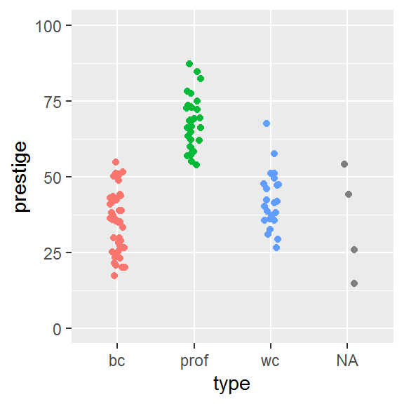
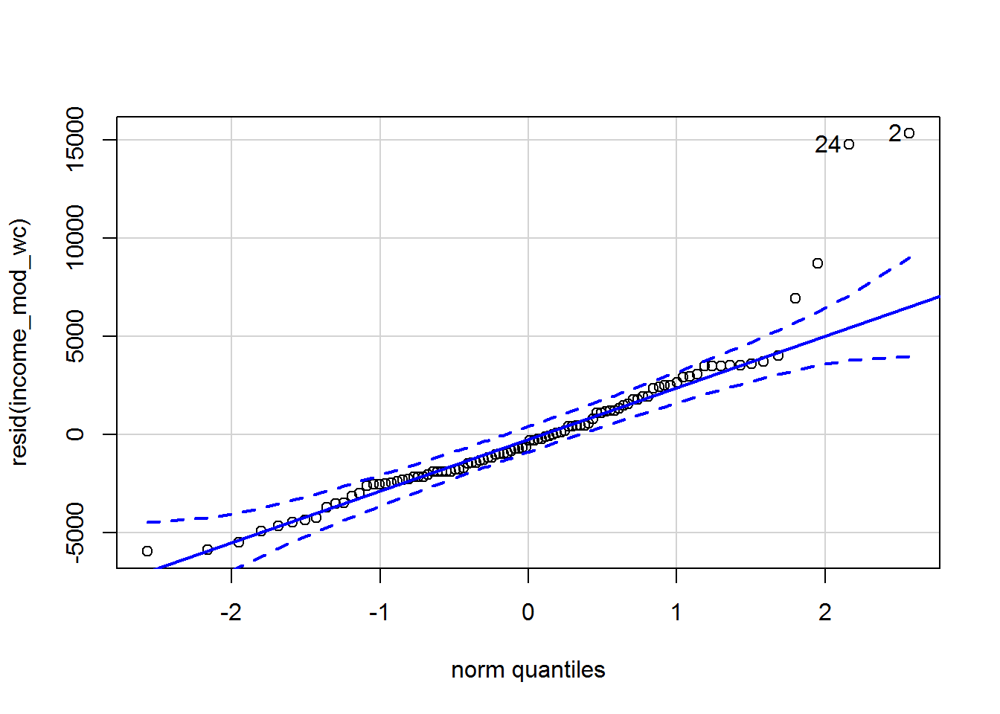
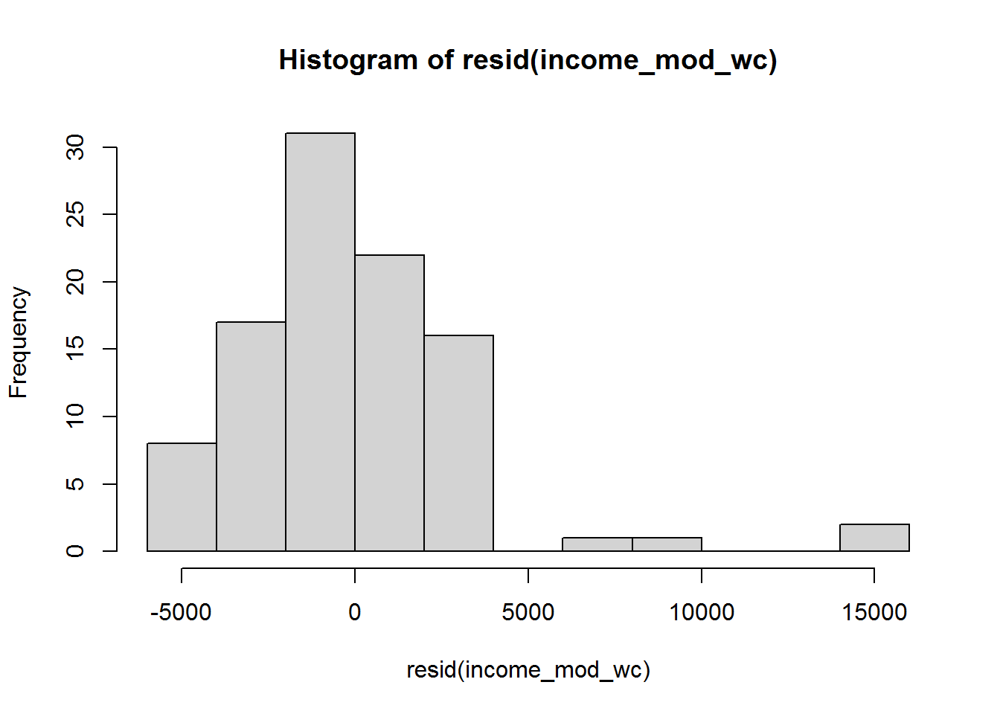
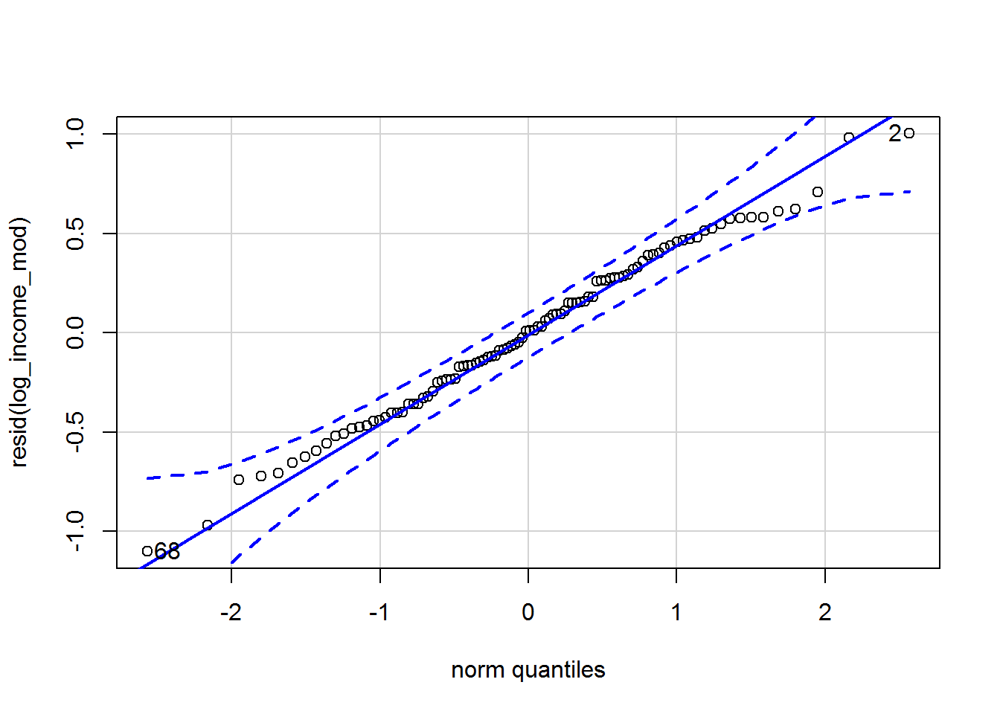

Chapter 7 Categorical predictors and interactions
By the end of this chapter you will:
- Understand how to use R factors, which automatically deal with fiddly aspects of using categorical predictors in statistical models.
- Be able to relate R output to what is going on behind the scenes, i.e., coding of a category with \(n\)-levels in terms of \(n-1\) binary 0/1 predictors.
- See how R does interactions effects (the
*and:operators).
The lovely thing about the topics covered in this chapter is that they all transfer to every other model, e.g., logistic regression and other generalised linear models, multilevel models, and a huge number of models which you may encounter in future.
7.1 Before we begin
We are going to persist with the prestige dataset another time. (Last chapter, promise.) You could continue on the end of last week’s Markdown file or make a new one.
Ensure these handy packages are installed (you will only have to do that once) and included:
library(car)
library(tidyverse)7.2 The dataset
For ease of reference. Each row describes an occupation and aggregated data about that occupation (in 1970s Canada).
| Variable name | Description |
|---|---|
| occ | Occupation |
| education | Average years of education for people in the job |
| income | Average income in dollars |
| women | Percentage of women in occupation |
| prestige | A Pineo-Porter prestige score for the occupation with a possible range of 0-100 (higher = more prestigious) |
| type | “bc” = blue collar “wc” = white collar “prof” = professional, managerial, or technical |
Read it in:
dat <- read.csv("prestige.csv")This week we will explore whether there are mean differences in prestige between the three types of profession: blue collar, white collar, and professional.
7.3 Factors
R has a special kind of object called a factor for representing categorical variables in statistical models. Ensure that R “knows” that you want to treat type as a factor by doing the following:
dat$type <- factor(dat$type)You can check whether a variable is a factor by doing:
is.factor(dat$type)## [1] TRUEHere’s a variable that isn’t:
is.factor(dat$prestige)## [1] FALSEIt’s numeric…
is.numeric(dat$prestige)## [1] TRUEYou can also look up the “class” of a variable:
class(dat$type)## [1] "factor"You can check the levels of a factor by using the levels function:
levels(dat$type)## [1] "bc" "prof" "wc"The order is alphabetical by default and can easily be changed.
The levels function only works for factors:
levels(dat$prestige)## NULL7.4 Visualising the data
(I go through this in some detail, for information. Feel free to skip over it on first reading.)
We will be exploring whether there are differences in a continuous variable (prestige) between levels of a categorical variable (type).
A traditional visualisation for this genre of comparison is the bar plot, with either standard error of the mean (SE mean) or standard deviation (SD) error bars.
These days, the recommendation is to look at the raw data before reducing it to means, for instance with a jitter plot.
set.seed(100) # Optional
dat %>%
ggplot(aes(type, prestige, colour = type)) +
geom_jitter(height = 0,
width = .1,
show.legend = FALSE) +
ylim(0,100)
We can see 4 observations in an “NA” category. Those are missing data, i.e., values in the dataset which have not been assigned a type.
dat %>%
filter(is.na(type))## occ education income women prestige type
## 1 athletes 11.44 8206 8.13 54.1 <NA>
## 2 newsboys 9.62 918 7.00 14.8 <NA>
## 3 babysitters 9.46 611 96.53 25.9 <NA>
## 4 farmers 6.84 3643 3.60 44.1 <NA>Also note that I have fixed the y-axis scale so that it covers the theoretical range of the prestige measure (0-100) rather than only the values present in the data.
Here is how to make the traditional bar plot. First calculate the means and standard error of the means for each group. The standard error is calculated as
\[
\frac{\mathit{SD}}{\sqrt{N}}
\]
where \(N\) is the number of observations. R has a function called sqrt for calculating the square root:
sqrt(4)## [1] 2We use group_by as before to ask tidyverse to group observations by type of occupation, and then summarise the data. The n function simply counts the number of observations, which will also be calculated per group following the group_by.
dat_means <- dat %>%
group_by(type) %>%
summarise(mean = mean(prestige),
SD = sd(prestige),
SE = SD/sqrt(n()),
n = n())
dat_means## # A tibble: 4 x 5
## type mean SD SE n
## <fct> <dbl> <dbl> <dbl> <int>
## 1 bc 35.5 10.0 1.51 44
## 2 prof 67.8 8.68 1.56 31
## 3 wc 42.2 9.52 1.98 23
## 4 <NA> 34.7 17.7 8.84 4Here is how I went about plotting these values.
I began by plotting the means:
dat_means %>%
ggplot(aes(type, mean)) +
geom_bar(stat = "identity")Then I added error bars:
dat_means %>%
ggplot(aes(type, mean)) +
geom_bar(stat = "identity") +
geom_errorbar(aes(ymin = mean - SE,
ymax = mean + SE))
Following this, I fiddled around for fifteen minutes, wishing I had just looked up a bar plot I had made previously… (The lesson here is, build a stash of example R code you can quickly find, adapt, and reuse.)
dat_means %>%
filter(!is.na(type)) %>%
ggplot(aes(type, mean, fill = type)) +
geom_bar(stat = "identity", show.legend = F) +
geom_errorbar(aes(ymin = mean - SE,
ymax = mean + SE), width = 1/4) +
xlab("Occupation type") +
ylab("Mean prestige") +
ylim(0, 100) +
theme_classic() You might want to add standard deviation bars instead:
dat_means %>%
filter(!is.na(type)) %>%
ggplot(aes(type, mean, fill = type)) +
geom_bar(stat = "identity", show.legend = F) +
geom_errorbar(aes(ymin = mean - SD,
ymax = mean + SD), width = 1/4) +
xlab("Occupation type") +
ylab("Mean prestige") +
ylim(0, 100) +
theme_classic() You might also want less vibrant colours, e.g., if you wish to include the graph in a publication:
dat_means %>%
filter(!is.na(type)) %>%
ggplot(aes(type, mean)) +
geom_bar(stat = "identity", fill = "grey") +
geom_errorbar(aes(ymin = mean - SD,
ymax = mean + SD), width = 1/4) +
xlab("Occupation type") +
ylab("Mean prestige") +
ylim(0,100) +
theme_classic() These are the chunk options I used to change the dimensions of the figure, which might be handy to know about too (they go at the top of the chunk):
{r fig.height=3, fig.width=3}7.5 The punchline: occupation type does predict prestige
This is where we are heading.
First, select the variables you want to model and remove missing values:
dat_no_NAs <- dat %>%
select(occ, prestige, type) %>%
na.omit()We could just have removed missing variables from the whole dataset – it would have worked for the prestige dataset since there are only four missing values and they are all in one variable. However, for larger datasets doing so might easily wipe out everything! For more on handling missing data correctly, try the book by van Buuren (2018).
Now, fit an intercept-only model and compare it with a model which has type as a predictor. R will automatically do something sensible with type since it knows that it is a factor.
intercept_only <- lm(prestige ~ 1, data = dat_no_NAs)
type_mod <- lm(prestige ~ type, data = dat_no_NAs)
# (the 1 is implicit)
anova(intercept_only, type_mod)## Analysis of Variance Table
##
## Model 1: prestige ~ 1
## Model 2: prestige ~ type
## Res.Df RSS Df Sum of Sq F Pr(>F)
## 1 97 28346.9
## 2 95 8571.3 2 19776 109.59 < 2.2e-16 ***
## ---
## Signif. codes: 0 '***' 0.001 '**' 0.01 '*' 0.05 '.' 0.1 ' ' 1Occupation type does indeed explain variation in prestige, \(F(2,95) = 109.59\), \(p < .001\).
An even easier way to do this is using car’s Anova command (uppercase A). This does not require you to fit an intercept-only model yourself and deals with multiple predictors (handy later):
type_mod <- lm(prestige ~ type, data = dat_no_NAs)
Anova(type_mod)## Anova Table (Type II tests)
##
## Response: prestige
## Sum Sq Df F value Pr(>F)
## type 19775.6 2 109.59 < 2.2e-16 ***
## Residuals 8571.3 95
## ---
## Signif. codes: 0 '***' 0.001 '**' 0.01 '*' 0.05 '.' 0.1 ' ' 1Read on to see why this has worked and also to work out which of the three occupations differ from each other in prestige…
7.6 Understanding factors in regression models
7.6.1 How are categorical variables encoded?
Let’s begin with an easier example with only two groups: blue collar and white collar occupations:
just_two <- dat %>%
filter(type %in% c("bc","wc")) %>%
select(occ, prestige, type)Here are the means of prestige for both groups:
just_two %>%
group_by(type) %>%
summarise(mean_prestige = mean(prestige))## # A tibble: 2 x 2
## type mean_prestige
## <fct> <dbl>
## 1 bc 35.5
## 2 wc 42.2Next, let’s fit a regression model, predicting prestige from occupation type:
easier <- lm(prestige ~ type, data = just_two)
summary(easier)##
## Call:
## lm(formula = prestige ~ type, data = just_two)
##
## Residuals:
## Min 1Q Median 3Q Max
## -18.2273 -7.0273 -0.2273 6.8227 25.2565
##
## Coefficients:
## Estimate Std. Error t value Pr(>|t|)
## (Intercept) 35.527 1.486 23.914 <2e-16 ***
## typewc 6.716 2.536 2.649 0.0101 *
## ---
## Signif. codes: 0 '***' 0.001 '**' 0.01 '*' 0.05 '.' 0.1 ' ' 1
##
## Residual standard error: 9.855 on 65 degrees of freedom
## Multiple R-squared: 0.09742, Adjusted R-squared: 0.08353
## F-statistic: 7.016 on 1 and 65 DF, p-value: 0.01013Note how we told lm that the predictor is type; however, the summary is displaying a slope for typewc. Curious…
7.6.1.1 Activity
Examine the estimates (the intercept and the slope for typewc) in this model and compare them with the means of the two groups. Can you see where the numbers come from?
7.6.1.2 Answer
The intercept is the same as the mean prestige for bc (\(35.527\)) and the slope for typewc is equal to the mean difference in prestige between the two groups: white collar minus blue collar (\(42.243 - 35.527 = 6.716\)).
7.6.2 How are binary (two-level) categorical predictors encoded?
First let me emphasise that you do not need to do this coding yourself; this section aims to demonstrate how the coding works, not how to carry out an analysis.
When you have a binary categorical variable (one with two levels), one level is coded as 0 and the other as 1. By default, R chooses alphabetically.
Here is something equivalent – a “hand coded” variable which is 1 for white collar occupations and 0 for blue collar:
just_two$type_wc <- as.numeric(just_two$type == "wc")Have a look, comparing the type column with type_wc:
just_two## occ prestige type type_wc
## 1 nursing aides 34.9 bc 0
## 2 medical technicians 67.5 wc 1
## 3 radio tv announcers 57.6 wc 1
## 4 secretaries 46.0 wc 1
## 5 typists 41.9 wc 1
## 6 bookkeepers 49.4 wc 1
## 7 tellers cashiers 42.3 wc 1
## 8 computer operators 47.7 wc 1
## 9 shipping clerks 30.9 wc 1
## 10 file clerks 32.7 wc 1
## 11 receptionsts 38.7 wc 1
## 12 mail carriers 36.1 wc 1
## 13 postal clerks 37.2 wc 1
## 14 telephone operators 38.1 wc 1
## 15 collectors 29.4 wc 1
## 16 claim adjustors 51.1 wc 1
## 17 travel clerks 35.7 wc 1
## 18 office clerks 35.6 wc 1
## 19 sales supervisors 41.5 wc 1
## 20 commercial travellers 40.2 wc 1
## 21 sales clerks 26.5 wc 1
## 22 service station attendant 23.3 bc 0
## 23 insurance agents 47.3 wc 1
## 24 real estate salesmen 47.1 wc 1
## 25 buyers 51.1 wc 1
## 26 firefighters 43.5 bc 0
## 27 policemen 51.6 bc 0
## 28 cooks 29.7 bc 0
## 29 bartenders 20.2 bc 0
## 30 funeral directors 54.9 bc 0
## 31 launderers 20.8 bc 0
## 32 janitors 17.3 bc 0
## 33 elevator operators 20.1 bc 0
## 34 farm workers 21.5 bc 0
## 35 rotary well drillers 35.3 bc 0
## 36 bakers 38.9 bc 0
## 37 slaughterers 1 25.2 bc 0
## 38 slaughterers 2 34.8 bc 0
## 39 canners 23.2 bc 0
## 40 textile weavers 33.3 bc 0
## 41 textile labourers 28.8 bc 0
## 42 tool die makers 42.5 bc 0
## 43 machinists 44.2 bc 0
## 44 sheet metal workers 35.9 bc 0
## 45 welders 41.8 bc 0
## 46 auto workers 35.9 bc 0
## 47 aircraft workers 43.7 bc 0
## 48 electronic workers 50.8 bc 0
## 49 radio tv repairmen 37.2 bc 0
## 50 sewing mach operators 28.2 bc 0
## 51 auto repairmen 38.1 bc 0
## 52 aircraft repairmen 50.3 bc 0
## 53 railway sectionmen 27.3 bc 0
## 54 electrical linemen 40.9 bc 0
## 55 electricians 50.2 bc 0
## 56 construction foremen 51.1 bc 0
## 57 carpenters 38.9 bc 0
## 58 masons 36.2 bc 0
## 59 house painters 29.9 bc 0
## 60 plumbers 42.9 bc 0
## 61 construction labourers 26.5 bc 0
## 62 train engineers 48.9 bc 0
## 63 bus drivers 35.9 bc 0
## 64 taxi drivers 25.1 bc 0
## 65 longshoremen 26.1 bc 0
## 66 typesetters 42.2 bc 0
## 67 bookbinders 35.2 bc 0Now let’s fit a regression model with this binary 0/1 variable as a predictor:
the_binary <- lm(prestige ~ type_wc, data = just_two)
summary(the_binary)##
## Call:
## lm(formula = prestige ~ type_wc, data = just_two)
##
## Residuals:
## Min 1Q Median 3Q Max
## -18.2273 -7.0273 -0.2273 6.8227 25.2565
##
## Coefficients:
## Estimate Std. Error t value Pr(>|t|)
## (Intercept) 35.527 1.486 23.914 <2e-16 ***
## type_wc 6.716 2.536 2.649 0.0101 *
## ---
## Signif. codes: 0 '***' 0.001 '**' 0.01 '*' 0.05 '.' 0.1 ' ' 1
##
## Residual standard error: 9.855 on 65 degrees of freedom
## Multiple R-squared: 0.09742, Adjusted R-squared: 0.08353
## F-statistic: 7.016 on 1 and 65 DF, p-value: 0.01013Again, the intercept provides the mean prestige for blue collar and the slope for type_wc gives the mean difference between blue collar and white collar. This model is mathematically identical to the one that R built using the factor variable.
A (slightly jittered) picture might help you see why this is.
set.seed(45)
just_two %>%
ggplot(aes(type_wc,prestige)) +
geom_jitter(width = .02, height = 0) +
geom_abline(intercept = coef(the_binary)[1],
slope = coef(the_binary)[2])The values at the left hand side, above 0, are for blue collar occupations and at the right hand size, above 1, are for white collar occupations.
We asked lm to estimate an intercept (\(\beta_0\)) and slope for type_wc (\(\beta_1\)).
\[ \mathtt{prestige} = \beta_0 + \beta_1 \times \mathtt{type\_wc} \]
This is what it found:
\[ \mathtt{prestige} = 35.5 + 6.7 \times \mathtt{type\_wc} \]
Interpret the regression model as usual: for every unit increase in type_wc, prestige increases by 6.7. That’s the slope in the picture above.
But the type_wc variable only has two possible values, so this is the simplest example of “unit increase.” It can be 1, in which case we get the mean of white collar:
\[ \begin{array}{rcl} \mathtt{prestige} & = & 35.5 + 6.7 \times \mathtt{type\_wc}\\ & = & 35.5 + 6.7 \times 1 \\ & = & 35.5 + 6.7 \\ & = & 42.2 \end{array} \]
Alternatively, the predictor can be zero, in which case we get the mean of blue collar:
\[ \begin{array}{rcl} \mathtt{prestige} & = & 35.5 + 6.7 \times \mathtt{type\_wc}\\ & = & 35.5 + 6.7 \times 0 \\ & = & 35.5 + 0 \\ & = & 35.5 \end{array} \]
By the way, this is equivalent to a two-sample t-test assuming equal variance:
t.test(prestige ~ type, data = just_two, var.equal = TRUE)##
## Two Sample t-test
##
## data: prestige by type
## t = -2.6487, df = 65, p-value = 0.01013
## alternative hypothesis: true difference in means is not equal to 0
## 95 percent confidence interval:
## -11.780279 -1.652132
## sample estimates:
## mean in group bc mean in group wc
## 35.52727 42.243487.6.3 Categorical predictors with 3 or more levels
In general, if a categorical variable has \(n\) levels, then there will be \(n-1\) binary predictors added to the regression model. One level must be chosen as the comparison level. Slopes for the predictors represent differences from that comparison level.
Here is a model, fitted using R’s automatic coding (and summarised with the aid of a pipe, just to add a little variation):
lm(prestige ~ type, data = dat_no_NAs) %>%
summary()##
## Call:
## lm(formula = prestige ~ type, data = dat_no_NAs)
##
## Residuals:
## Min 1Q Median 3Q Max
## -18.2273 -7.1773 -0.0854 6.1174 25.2565
##
## Coefficients:
## Estimate Std. Error t value Pr(>|t|)
## (Intercept) 35.527 1.432 24.810 < 2e-16 ***
## typeprof 32.321 2.227 14.511 < 2e-16 ***
## typewc 6.716 2.444 2.748 0.00718 **
## ---
## Signif. codes: 0 '***' 0.001 '**' 0.01 '*' 0.05 '.' 0.1 ' ' 1
##
## Residual standard error: 9.499 on 95 degrees of freedom
## Multiple R-squared: 0.6976, Adjusted R-squared: 0.6913
## F-statistic: 109.6 on 2 and 95 DF, p-value: < 2.2e-16Now let’s do the same again “by hand,” to show the coding:
dat_no_NAs$type_prof <- as.numeric(dat_no_NAs$type == "prof")
dat_no_NAs$type_wc <- as.numeric(dat_no_NAs$type == "wc")There are now two predictors: type_prof is 1 when the occupation type is prof and 0 otherwise; type_wc is 1 when the occupation type is wc and 0 otherwise. Whenever the occupation type is bc, both of these predictors are zero.
Have a look to see what this has done, comparing the type column with type_prof and type_wc:
dat_no_NAs## occ prestige type type_prof type_wc
## 1 gov administrators 68.8 prof 1 0
## 2 general managers 69.1 prof 1 0
## 3 accountants 63.4 prof 1 0
## 4 purchasing officers 56.8 prof 1 0
## 5 chemists 73.5 prof 1 0
## 6 physicists 77.6 prof 1 0
## 7 biologists 72.6 prof 1 0
## 8 architects 78.1 prof 1 0
## 9 civil engineers 73.1 prof 1 0
## 10 mining engineers 68.8 prof 1 0
## 11 surveyors 62.0 prof 1 0
## 12 draughtsmen 60.0 prof 1 0
## 13 computer programers 53.8 prof 1 0
## 14 economists 62.2 prof 1 0
## 15 psychologists 74.9 prof 1 0
## 16 social workers 55.1 prof 1 0
## 17 lawyers 82.3 prof 1 0
## 18 librarians 58.1 prof 1 0
## 19 vocational counsellors 58.3 prof 1 0
## 20 ministers 72.8 prof 1 0
## 21 university teachers 84.6 prof 1 0
## 22 primary school teachers 59.6 prof 1 0
## 23 secondary school teachers 66.1 prof 1 0
## 24 physicians 87.2 prof 1 0
## 25 veterinarians 66.7 prof 1 0
## 26 osteopaths chiropractors 68.4 prof 1 0
## 27 nurses 64.7 prof 1 0
## 28 nursing aides 34.9 bc 0 0
## 29 physio therapsts 72.1 prof 1 0
## 30 pharmacists 69.3 prof 1 0
## 31 medical technicians 67.5 wc 0 1
## 32 commercial artists 57.2 prof 1 0
## 33 radio tv announcers 57.6 wc 0 1
## 35 secretaries 46.0 wc 0 1
## 36 typists 41.9 wc 0 1
## 37 bookkeepers 49.4 wc 0 1
## 38 tellers cashiers 42.3 wc 0 1
## 39 computer operators 47.7 wc 0 1
## 40 shipping clerks 30.9 wc 0 1
## 41 file clerks 32.7 wc 0 1
## 42 receptionsts 38.7 wc 0 1
## 43 mail carriers 36.1 wc 0 1
## 44 postal clerks 37.2 wc 0 1
## 45 telephone operators 38.1 wc 0 1
## 46 collectors 29.4 wc 0 1
## 47 claim adjustors 51.1 wc 0 1
## 48 travel clerks 35.7 wc 0 1
## 49 office clerks 35.6 wc 0 1
## 50 sales supervisors 41.5 wc 0 1
## 51 commercial travellers 40.2 wc 0 1
## 52 sales clerks 26.5 wc 0 1
## 54 service station attendant 23.3 bc 0 0
## 55 insurance agents 47.3 wc 0 1
## 56 real estate salesmen 47.1 wc 0 1
## 57 buyers 51.1 wc 0 1
## 58 firefighters 43.5 bc 0 0
## 59 policemen 51.6 bc 0 0
## 60 cooks 29.7 bc 0 0
## 61 bartenders 20.2 bc 0 0
## 62 funeral directors 54.9 bc 0 0
## 64 launderers 20.8 bc 0 0
## 65 janitors 17.3 bc 0 0
## 66 elevator operators 20.1 bc 0 0
## 68 farm workers 21.5 bc 0 0
## 69 rotary well drillers 35.3 bc 0 0
## 70 bakers 38.9 bc 0 0
## 71 slaughterers 1 25.2 bc 0 0
## 72 slaughterers 2 34.8 bc 0 0
## 73 canners 23.2 bc 0 0
## 74 textile weavers 33.3 bc 0 0
## 75 textile labourers 28.8 bc 0 0
## 76 tool die makers 42.5 bc 0 0
## 77 machinists 44.2 bc 0 0
## 78 sheet metal workers 35.9 bc 0 0
## 79 welders 41.8 bc 0 0
## 80 auto workers 35.9 bc 0 0
## 81 aircraft workers 43.7 bc 0 0
## 82 electronic workers 50.8 bc 0 0
## 83 radio tv repairmen 37.2 bc 0 0
## 84 sewing mach operators 28.2 bc 0 0
## 85 auto repairmen 38.1 bc 0 0
## 86 aircraft repairmen 50.3 bc 0 0
## 87 railway sectionmen 27.3 bc 0 0
## 88 electrical linemen 40.9 bc 0 0
## 89 electricians 50.2 bc 0 0
## 90 construction foremen 51.1 bc 0 0
## 91 carpenters 38.9 bc 0 0
## 92 masons 36.2 bc 0 0
## 93 house painters 29.9 bc 0 0
## 94 plumbers 42.9 bc 0 0
## 95 construction labourers 26.5 bc 0 0
## 96 pilots 66.1 prof 1 0
## 97 train engineers 48.9 bc 0 0
## 98 bus drivers 35.9 bc 0 0
## 99 taxi drivers 25.1 bc 0 0
## 100 longshoremen 26.1 bc 0 0
## 101 typesetters 42.2 bc 0 0
## 102 bookbinders 35.2 bc 0 0If we fit a model with these two “hand coded” predictors, the results are identical to what R did automatically:
lm(prestige ~ type_prof + type_wc, data = dat_no_NAs) %>%
summary()##
## Call:
## lm(formula = prestige ~ type_prof + type_wc, data = dat_no_NAs)
##
## Residuals:
## Min 1Q Median 3Q Max
## -18.2273 -7.1773 -0.0854 6.1174 25.2565
##
## Coefficients:
## Estimate Std. Error t value Pr(>|t|)
## (Intercept) 35.527 1.432 24.810 < 2e-16 ***
## type_prof 32.321 2.227 14.511 < 2e-16 ***
## type_wc 6.716 2.444 2.748 0.00718 **
## ---
## Signif. codes: 0 '***' 0.001 '**' 0.01 '*' 0.05 '.' 0.1 ' ' 1
##
## Residual standard error: 9.499 on 95 degrees of freedom
## Multiple R-squared: 0.6976, Adjusted R-squared: 0.6913
## F-statistic: 109.6 on 2 and 95 DF, p-value: < 2.2e-16Now the formula is:
\[ \begin{array}{rcl} \mathtt{prestige} & = & 35.5 + 32.3 \times \mathtt{type\_prof} + 6.7 \times \mathtt{type\_wc} \end{array} \]
There are three possibilities:
type_profandtype_wcare both zero, so the model computes the mean prestige for blue collar workers.
\[ \begin{array}{rcl} \mathtt{prestige} & = & 35.5 + 32.3 \times 0 + 6.7 \times 0\\ & = & 35.5 \end{array} \]
type_profis 1 andtype_wcis 0, so the model computes the mean prestige for professionals.
\[ \begin{array}{rcl} \mathtt{prestige} & = & 35.5 + 32.3 \times 1 + 6.7 \times 0\\ & = & 35.5 + 32.3\\ & = & 67.8 \end{array} \]
type_profis 0 andtype_wcis 1, so the model computes the mean prestige for white collar workers.
\[ \begin{array}{rcl} \mathtt{prestige} & = & 35.5 + 32.3 \times 0 + 6.7 \times 1\\ & = & 35.5 + 6.7\\ & = & 42.2 \end{array} \]
7.7 Interpreting the coefficients
Here’s the model again:
lm(prestige ~ type, data = dat_no_NAs) %>%
summary()##
## Call:
## lm(formula = prestige ~ type, data = dat_no_NAs)
##
## Residuals:
## Min 1Q Median 3Q Max
## -18.2273 -7.1773 -0.0854 6.1174 25.2565
##
## Coefficients:
## Estimate Std. Error t value Pr(>|t|)
## (Intercept) 35.527 1.432 24.810 < 2e-16 ***
## typeprof 32.321 2.227 14.511 < 2e-16 ***
## typewc 6.716 2.444 2.748 0.00718 **
## ---
## Signif. codes: 0 '***' 0.001 '**' 0.01 '*' 0.05 '.' 0.1 ' ' 1
##
## Residual standard error: 9.499 on 95 degrees of freedom
## Multiple R-squared: 0.6976, Adjusted R-squared: 0.6913
## F-statistic: 109.6 on 2 and 95 DF, p-value: < 2.2e-16From this we can see that the prestige for professionals is 32.3 points more than for blue collar workers (\(t = 14.5\), \(p < .001\)) and prestige for white collar workers is 6.7 points more than for blue collar (\(t = 2.7\), \(p = .007\)); both differences are statistically significant.
We have a variable with three levels and this has ended up the regression model as two predictors, (1) typewc and (2) typeprof, the slopes of which represent the difference between (1) wc and bc and (2) prof and bc, respectively.
But this does not currently show us all combinations. What is the difference between wc and prof?
Here is relevel to the rescue. It relevels a factor so that whichever level you name comes first. You can add the command directly to a model specification like this:
lm(prestige ~ relevel(type, "prof"), data = dat_no_NAs) %>%
summary()##
## Call:
## lm(formula = prestige ~ relevel(type, "prof"), data = dat_no_NAs)
##
## Residuals:
## Min 1Q Median 3Q Max
## -18.2273 -7.1773 -0.0854 6.1174 25.2565
##
## Coefficients:
## Estimate Std. Error t value Pr(>|t|)
## (Intercept) 67.848 1.706 39.770 < 2e-16 ***
## relevel(type, "prof")bc -32.321 2.227 -14.511 < 2e-16 ***
## relevel(type, "prof")wc -25.605 2.614 -9.795 4.53e-16 ***
## ---
## Signif. codes: 0 '***' 0.001 '**' 0.01 '*' 0.05 '.' 0.1 ' ' 1
##
## Residual standard error: 9.499 on 95 degrees of freedom
## Multiple R-squared: 0.6976, Adjusted R-squared: 0.6913
## F-statistic: 109.6 on 2 and 95 DF, p-value: < 2.2e-16Or, do it a longer but clearer way, e.g.,
dat_no_NAs$type_vs_prof <- relevel(dat_no_NAs$type, "prof")
myMod <- lm(prestige ~ type_vs_prof, data = dat_no_NAs)
summary(myMod)##
## Call:
## lm(formula = prestige ~ type_vs_prof, data = dat_no_NAs)
##
## Residuals:
## Min 1Q Median 3Q Max
## -18.2273 -7.1773 -0.0854 6.1174 25.2565
##
## Coefficients:
## Estimate Std. Error t value Pr(>|t|)
## (Intercept) 67.848 1.706 39.770 < 2e-16 ***
## type_vs_profbc -32.321 2.227 -14.511 < 2e-16 ***
## type_vs_profwc -25.605 2.614 -9.795 4.53e-16 ***
## ---
## Signif. codes: 0 '***' 0.001 '**' 0.01 '*' 0.05 '.' 0.1 ' ' 1
##
## Residual standard error: 9.499 on 95 degrees of freedom
## Multiple R-squared: 0.6976, Adjusted R-squared: 0.6913
## F-statistic: 109.6 on 2 and 95 DF, p-value: < 2.2e-16The advantage of this is that we can have a look at the levels and check that prof comes first:
levels(dat_no_NAs$type_vs_prof)## [1] "prof" "bc" "wc"7.7.1 Activity
Interpret the coefficients in this myMod model.
7.7.2 Answer
Prestige for professionals is 32.3 points greater than for blue collar workers (\(t = 14.5\), \(p < .001\)) and 25.6 points greater than for white collar workers (\(t = 9.8\), \(p < .001\)).
7.8 Checking all combinations
It can quickly become a pain to use relevel like this and there are various alternatives.
At this point, I wish I hadn’t been so clever using a pipe and instead just saved the model. I shall do so now.
das_Model <- lm(prestige ~ type, data = dat_no_NAs)We will use the emmeans package.
library(emmeans)The main function therein is emmeans. Fox and Weisberg (2019, p. 203) comment that the formula argument is “idiosyncratic.” Anyway, here is how to use it:
emmeans(das_Model, pairwise ~ type)## $emmeans
## type emmean SE df lower.CL upper.CL
## bc 35.5 1.43 95 32.7 38.4
## prof 67.8 1.71 95 64.5 71.2
## wc 42.2 1.98 95 38.3 46.2
##
## Confidence level used: 0.95
##
## $contrasts
## contrast estimate SE df t.ratio p.value
## bc - prof -32.32 2.23 95 -14.511 <.0001
## bc - wc -6.72 2.44 95 -2.748 0.0195
## prof - wc 25.60 2.61 95 9.795 <.0001
##
## P value adjustment: tukey method for comparing a family of 3 estimatesThe first parameter is the name of the model, the second is a formula specifying which comparisons are required. The idiosyncracy in the model specification is that “pairwise” is not a variable in the data – it’s a type of comparison.
Compare and contrast with the results obtained by using relevel above.
The estimates are identical. One difference you will observe is that the p-values are adjusted for the number of comparisons. There has been an enormous quantity of ink spilled on the problem of multiple comparisons. You may recall a variety of corrections, often named after their creators, e.g., Bonferroni, Bonferroni-Holm (my favourite), and Šidák.
Here, the p-values are adjusted by “tukey method” which is Tukey’s Honest Significant Differences (HSD) adjustment. (Tukey is another statistician.)
7.9 The intercept is not always the mean of the comparison group
The intercept always works the same way: it is the mean of the outcome variable when the predictors are zero. In the examples we have looked at, this was the mean of the comparison group – whatever happened to be the first level of the factor.
Let’s try another model:
more_data <- dat %>%
select(occ, prestige, type, income) %>%
na.omit()
type_and_income <- lm(prestige ~ I(income/1000) + type, data = more_data)
summary(type_and_income)##
## Call:
## lm(formula = prestige ~ I(income/1000) + type, data = more_data)
##
## Residuals:
## Min 1Q Median 3Q Max
## -20.2141 -6.7359 -0.1931 5.1725 25.0776
##
## Coefficients:
## Estimate Std. Error t value Pr(>|t|)
## (Intercept) 27.9971 1.8008 15.547 < 2e-16 ***
## I(income/1000) 1.4012 0.2434 5.757 1.07e-07 ***
## typeprof 25.0555 2.3020 10.884 < 2e-16 ***
## typewc 7.1672 2.1140 3.390 0.00102 **
## ---
## Signif. codes: 0 '***' 0.001 '**' 0.01 '*' 0.05 '.' 0.1 ' ' 1
##
## Residual standard error: 8.21 on 94 degrees of freedom
## Multiple R-squared: 0.7765, Adjusted R-squared: 0.7693
## F-statistic: 108.8 on 3 and 94 DF, p-value: < 2.2e-16Now the intercept is not the mean prestige for blue collar workers, but rather it is predicted mean prestige for blue collar workers when income is zero.
By the way, we can use emmeans again to compare occupation types, holding income constant:
emmeans(type_and_income, pairwise ~ type)## $emmeans
## type emmean SE df lower.CL upper.CL
## bc 37.7 1.30 94 35.1 40.3
## prof 62.8 1.72 94 59.4 66.2
## wc 44.9 1.77 94 41.4 48.4
##
## Confidence level used: 0.95
##
## $contrasts
## contrast estimate SE df t.ratio p.value
## bc - prof -25.06 2.30 94 -10.884 <.0001
## bc - wc -7.17 2.11 94 -3.390 0.0029
## prof - wc 17.89 2.63 94 6.809 <.0001
##
## P value adjustment: tukey method for comparing a family of 3 estimates7.10 Recap
Okay, we have covered rather a lot of ground there so let me summarise a swift method for testing whether a categorical predictor explains variance in some outcome. I’ll use an example where we also statistically adjust for another predictor (known as a covariate).
First, do whatever you need to do to obtain and tidy the data:
more_data <- dat %>%
select(occ, prestige, type, income) %>%
na.omit()Fit the model of interest:
my_model <- lm(prestige ~ I(income/1000) + type, data = more_data)Use Anova to see which predictors are statistically significant
Anova(my_model)## Anova Table (Type II tests)
##
## Response: prestige
## Sum Sq Df F value Pr(>F)
## I(income/1000) 2234.5 1 33.147 1.068e-07 ***
## type 7988.5 2 59.251 < 2.2e-16 ***
## Residuals 6336.7 94
## ---
## Signif. codes: 0 '***' 0.001 '**' 0.01 '*' 0.05 '.' 0.1 ' ' 1Look at a summary:
summary(my_model)##
## Call:
## lm(formula = prestige ~ I(income/1000) + type, data = more_data)
##
## Residuals:
## Min 1Q Median 3Q Max
## -20.2141 -6.7359 -0.1931 5.1725 25.0776
##
## Coefficients:
## Estimate Std. Error t value Pr(>|t|)
## (Intercept) 27.9971 1.8008 15.547 < 2e-16 ***
## I(income/1000) 1.4012 0.2434 5.757 1.07e-07 ***
## typeprof 25.0555 2.3020 10.884 < 2e-16 ***
## typewc 7.1672 2.1140 3.390 0.00102 **
## ---
## Signif. codes: 0 '***' 0.001 '**' 0.01 '*' 0.05 '.' 0.1 ' ' 1
##
## Residual standard error: 8.21 on 94 degrees of freedom
## Multiple R-squared: 0.7765, Adjusted R-squared: 0.7693
## F-statistic: 108.8 on 3 and 94 DF, p-value: < 2.2e-16Use emmeans to check for any comparisons of interest which were not included in the way the factor was initially setup:
emmeans(my_model, pairwise ~ type)## $emmeans
## type emmean SE df lower.CL upper.CL
## bc 37.7 1.30 94 35.1 40.3
## prof 62.8 1.72 94 59.4 66.2
## wc 44.9 1.77 94 41.4 48.4
##
## Confidence level used: 0.95
##
## $contrasts
## contrast estimate SE df t.ratio p.value
## bc - prof -25.06 2.30 94 -10.884 <.0001
## bc - wc -7.17 2.11 94 -3.390 0.0029
## prof - wc 17.89 2.63 94 6.809 <.0001
##
## P value adjustment: tukey method for comparing a family of 3 estimatesDon’t forget to check model diagnostics…
7.11 Challenge
7.11.1 Activity
Fit a regression model with income as the outcome variable and occupation type as a predictor. Does type explain variance in outcome?
Is there a statistically significant difference between blue collar and white collar salaries?
Is there a statistically significant difference between white collar and professional salaries?
Are the residuals normally distributed?
Try logging income to see what impact it has on the residual distribution
Now compare all differences between groups
7.11.2 Answers
a. Fit a regression model with income as the outcome variable and occupation type as a predictor. Does type explain variance in outcome?
income_mod <- lm(income ~ type, data = dat)
Anova(income_mod)## Anova Table (Type II tests)
##
## Response: income
## Sum Sq Df F value Pr(>F)
## type 595956156 2 24.872 2.057e-09 ***
## Residuals 1138123006 95
## ---
## Signif. codes: 0 '***' 0.001 '**' 0.01 '*' 0.05 '.' 0.1 ' ' 1Yes: \(F(2,95) = 24.87\), \(p < .001\)
b. Is there a statistically significant difference between blue collar and white collar salaries?
First, let’s have a look at the means, to help aid interpretation:
dat %>%
group_by(type) %>%
summarise(mean_income = mean(income))## # A tibble: 4 x 2
## type mean_income
## <fct> <dbl>
## 1 bc 5374.
## 2 prof 10559.
## 3 wc 5052.
## 4 <NA> 3344.The means for blue collar and white collar look very similar, about $300 difference. Let’s test that difference:
summary(income_mod)##
## Call:
## lm(formula = income ~ type, data = dat)
##
## Residuals:
## Min 1Q Median 3Q Max
## -5945.5 -2003.3 -466.2 1536.9 15319.5
##
## Coefficients:
## Estimate Std. Error t value Pr(>|t|)
## (Intercept) 5374.1 521.8 10.299 < 2e-16 ***
## typeprof 5185.3 811.6 6.389 6.16e-09 ***
## typewc -321.8 890.6 -0.361 0.719
## ---
## Signif. codes: 0 '***' 0.001 '**' 0.01 '*' 0.05 '.' 0.1 ' ' 1
##
## Residual standard error: 3461 on 95 degrees of freedom
## (4 observations deleted due to missingness)
## Multiple R-squared: 0.3437, Adjusted R-squared: 0.3299
## F-statistic: 24.87 on 2 and 95 DF, p-value: 2.057e-09There is no statistically significant difference, \(t = 0.361\), \(p = .71\).
c. Is there a statistically significant difference between white collar and professional salaries?
We can refit the model using relevel like so:
income_mod_wc <- lm(income ~ relevel(type, "wc"), data = dat)
summary(income_mod_wc)##
## Call:
## lm(formula = income ~ relevel(type, "wc"), data = dat)
##
## Residuals:
## Min 1Q Median 3Q Max
## -5945.5 -2003.3 -466.2 1536.9 15319.5
##
## Coefficients:
## Estimate Std. Error t value Pr(>|t|)
## (Intercept) 5052.3 721.7 7.000 3.6e-10 ***
## relevel(type, "wc")bc 321.8 890.6 0.361 0.719
## relevel(type, "wc")prof 5507.1 952.5 5.782 9.4e-08 ***
## ---
## Signif. codes: 0 '***' 0.001 '**' 0.01 '*' 0.05 '.' 0.1 ' ' 1
##
## Residual standard error: 3461 on 95 degrees of freedom
## (4 observations deleted due to missingness)
## Multiple R-squared: 0.3437, Adjusted R-squared: 0.3299
## F-statistic: 24.87 on 2 and 95 DF, p-value: 2.057e-09Yes, professional salaries are a mean $5507 more than white collar salaries (\(t = 5.78\), \(p < .001\)).
d. Are the residuals normally distributed?
The order of levels does not affect the residuals, so either model would do:
qqPlot(resid(income_mod_wc))
## [1] 2 24Hmmmm something fishy for residuals above 5000. Let’s look at the histogram in case it is more obvious:
hist(resid(income_mod_wc))
Looks like they are not normally distributed, though maybe driven by outliers?
e. Try logging income to see what impact it has on the residual distribution
dat$log_income <- log(dat$income)
log_income_mod <- lm(log_income ~ type, data = dat)Now the residuals look much better:
qqPlot(resid(log_income_mod))
## 68 2
## 64 2f. Now compare all differences between groups
Let’s use emmeans:
emmeans(log_income_mod, pairwise ~ type)## $emmeans
## type emmean SE df lower.CL upper.CL
## bc 8.51 0.0638 95 8.39 8.64
## prof 9.16 0.0760 95 9.01 9.31
## wc 8.46 0.0882 95 8.28 8.63
##
## Confidence level used: 0.95
##
## $contrasts
## contrast estimate SE df t.ratio p.value
## bc - prof -0.6452 0.0992 95 -6.507 <.0001
## bc - wc 0.0562 0.1088 95 0.516 0.8636
## prof - wc 0.7014 0.1164 95 6.027 <.0001
##
## P value adjustment: tukey method for comparing a family of 3 estimatesNote that the estimates are on the log scale, e.g., the difference between professional and white collar salaries is 0.7 on the logged $1000s scale.
7.12 Brief introduction to interactions
Fox and Weisberg (2019, pp. 207-224) say lots about interactions. In this tutorial I just want to mention briefly what they are and how to ask R to model them.
7.12.1 What is an interaction?
An interaction between two variables simply means that the relationship between the outcome and one of the variables is changed (or “moderated”) by the other variable. For example, we found that occupation type explains variation in prestige. It is possible that the magnitude of differences between occupation types depend on mean income.
Interactions can also be used to test for intersectional effects. Discrimination may, for instance, depend on sexism and racism – both operate independently. However, additionally the differences between men and women on some variable like salary might also depend on ethnicity and/or on whether you are cisgender or transgender.
Arithmetically, an interaction between two variables, A and B is represented as a new variable which is A and B multiplied together. R does the coding for us.
7.12.2 How to test for interactions in R
This shows how to test for an interaction between income and occupation type.
Let’s select some data again:
dat_for_int <- dat %>%
select(occ, prestige, type, income) %>%
na.omit()First, predict prestige from income (in thousands) and occupation type. This model has the so-called “main effects,” i.e., without any interaction.
dat$income_1000s <- dat$income/1000
main_effect_mod <- lm(prestige ~ income_1000s + type, data = dat)
summary(main_effect_mod)##
## Call:
## lm(formula = prestige ~ income_1000s + type, data = dat)
##
## Residuals:
## Min 1Q Median 3Q Max
## -20.2141 -6.7359 -0.1931 5.1725 25.0776
##
## Coefficients:
## Estimate Std. Error t value Pr(>|t|)
## (Intercept) 27.9971 1.8008 15.547 < 2e-16 ***
## income_1000s 1.4012 0.2434 5.757 1.07e-07 ***
## typeprof 25.0555 2.3020 10.884 < 2e-16 ***
## typewc 7.1672 2.1140 3.390 0.00102 **
## ---
## Signif. codes: 0 '***' 0.001 '**' 0.01 '*' 0.05 '.' 0.1 ' ' 1
##
## Residual standard error: 8.21 on 94 degrees of freedom
## (4 observations deleted due to missingness)
## Multiple R-squared: 0.7765, Adjusted R-squared: 0.7693
## F-statistic: 108.8 on 3 and 94 DF, p-value: < 2.2e-16We can then use Anova as before:
Anova(main_effect_mod)## Anova Table (Type II tests)
##
## Response: prestige
## Sum Sq Df F value Pr(>F)
## income_1000s 2234.5 1 33.147 1.068e-07 ***
## type 7988.5 2 59.251 < 2.2e-16 ***
## Residuals 6336.7 94
## ---
## Signif. codes: 0 '***' 0.001 '**' 0.01 '*' 0.05 '.' 0.1 ' ' 1There are effects for both income (\(F(1,94) = 33.1\), \(p < .001\)) and occupation type (\(F(2,94) = 59.3\), \(p < .001\)).
Now, do differences between occupation types depend on income?
We can check as follows:
interaction_mod <- lm(prestige ~ income_1000s + type +
income_1000s:type,
data = dat)
anova(main_effect_mod, interaction_mod)## Analysis of Variance Table
##
## Model 1: prestige ~ income_1000s + type
## Model 2: prestige ~ income_1000s + type + income_1000s:type
## Res.Df RSS Df Sum of Sq F Pr(>F)
## 1 94 6336.7
## 2 92 4859.2 2 1477.5 13.987 4.969e-06 ***
## ---
## Signif. codes: 0 '***' 0.001 '**' 0.01 '*' 0.05 '.' 0.1 ' ' 1And the answer is, yes; \(F(2,92) = 14.0\), \(p < .001\).
It is also possible to check both main effects (without interactions) and the interaction effect in one go:
Anova(interaction_mod)## Anova Table (Type II tests)
##
## Response: prestige
## Sum Sq Df F value Pr(>F)
## income_1000s 2234.5 1 42.306 3.999e-09 ***
## type 7988.5 2 75.623 < 2.2e-16 ***
## income_1000s:type 1477.5 2 13.987 4.969e-06 ***
## Residuals 4859.2 92
## ---
## Signif. codes: 0 '***' 0.001 '**' 0.01 '*' 0.05 '.' 0.1 ' ' 1The line beginning income_1000s:type shows the test of the interaction. To find out more about the Anova command and the Type II sum of squares it calculates by default, see Fox and Weisberg (2019, p. 262-264).
7.12.3 Understanding interactions
The most challenging aspect of interactions is that one can rapidly end up with enormously complex models which are difficult to interpret, even if everything is “statistically significant.” The secret to making sense of them is to plot model predictions. We will explore the ggeffects package – one easy way to do this – in more depth when examining logistic regression, but here is a preview of how it helps:
library(ggeffects)
ggpredict(interaction_mod, terms = c("income_1000s", "type")) %>%
plot(add.data = TRUE, ci = FALSE)Hopefully this graph illustrates what it means that the relationship between income and prestige depends on occupation type – the slopes are different for each type.
7.12.4 Further reading
You might be interested in Johnson-Neyman intervals. See the interactions package.